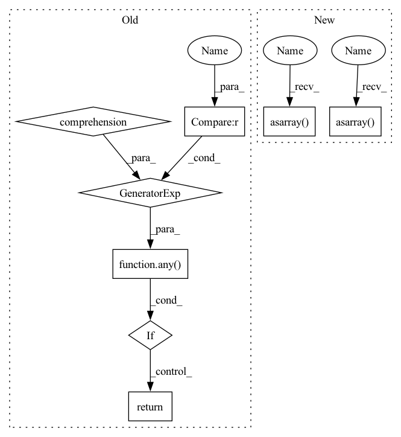

Pattern ID :34228
Before Change
max_val1 = np.array(x_min_n_max[1][2], dtype=dtype[2])
min_val = np.minimum(min_val1, max_val1)
max_val = np.maximum(min_val1, max_val1)
if fw == "torch" and (
any(d in ["uint16", "uint32", "uint64", "float16"] for d in dtype)
or np.isnan(max_val)
or np.isscalar(x)
):
return
helpers.test_function(
dtype,
as_variable,
with_out,After Change
(x_dtype, min_dtype, max_dtype), (x_list, min_val_list, max_val_list) = x_min_n_max
min_val_raw = np.array(min_val_list, dtype=min_dtype)
max_val_raw = np.array(max_val_list, dtype=max_dtype)
min_val = np.asarray( np.minimum(min_val_raw, max_val_raw))
max_val = np.asarray( np.maximum(min_val_raw, max_val_raw))
helpers.test_function(
[x_dtype, min_dtype, max_dtype],
as_variable,
with_out,In pattern: SUPERPATTERN
Frequency: 3
Non-data size: 8
Instances Fragment ID: 98108377
Project Name: ivy-dl/ivy
Commit Name: e3d23d28432c065ac45357d6d64ce2afb93ea94e
Time: 2022-07-12
Author: daniel.lenton11@imperial.ac.uk
File Name: ivy_tests/test_ivy/test_functional/test_core/test_manipulation.py
M Class Name: AnonimousClass
N Class Name: AnonimousClass
M Method Name: test_clip(9)
N Method Name: test_clip(10)
M Parent Class:
N Parent Class:
M File Name: ivy_tests/test_ivy/test_functional/test_core/test_manipulation.py
N File Name: ivy_tests/test_ivy/test_functional/test_core/test_manipulation.py
M Start Line: 716
M End Line: 744
N Start Line: 718
N End Line: 724
Before Change
max_val1 = np.array(x_min_n_max[1][2], dtype=dtype[2])
min_val = np.minimum(min_val1, max_val1)
max_val = np.maximum(min_val1, max_val1)
if fw == "torch" and (
any(d in ["uint16", "uint32", "uint64", "float16"] for d in dtype)
or np.isnan(max_val)
or np.isscalar(x)
):
return
helpers.test_function(
dtype,
as_variable,
with_out,After Change
(x_dtype, min_dtype, max_dtype), (x_list, min_val_list, max_val_list) = x_min_n_max
min_val_raw = np.array(min_val_list, dtype=min_dtype)
max_val_raw = np.array(max_val_list, dtype=max_dtype)
min_val = np.asarray( np.minimum(min_val_raw, max_val_raw))
max_val = np.asarray( np.maximum(min_val_raw, max_val_raw))
helpers.test_function(
[x_dtype, min_dtype, max_dtype],
as_variable,
with_out, Fragment ID: 98108376
Project Name: ivy-dl/ivy
Commit Name: e3d23d28432c065ac45357d6d64ce2afb93ea94e
Time: 2022-07-12
Author: daniel.lenton11@imperial.ac.uk
File Name: ivy_tests/test_ivy/test_functional/test_core/test_manipulation.py
M Class Name: AnonimousClass
N Class Name: AnonimousClass
M Method Name: test_clip(9)
N Method Name: test_clip(10)
M Parent Class:
N Parent Class:
M File Name: ivy_tests/test_ivy/test_functional/test_core/test_manipulation.py
N File Name: ivy_tests/test_ivy/test_functional/test_core/test_manipulation.py
M Start Line: 716
M End Line: 744
N Start Line: 718
N End Line: 724
Before Change
input_dtype, x = dtype_and_x
if any(xi == 0 for xi in x[1]):
return // don"t divide by 0
if any(
xi > 9223372036854775807 or yi > 9223372036854775807
for xi, yi in zip(x[0], x[1])
) :
return // np.divide converts to signed int so values can"t be too large
helpers.test_array_function(
input_dtype,
as_variable,After Change
fw,
):
input_dtype, x = dtype_and_x
x1 = np.asarray( x[0], dtype=input_dtype[0])
x2 = np.asarray( x[1], dtype=input_dtype[1])
// ToDo: remove the checks below, and instead handle this during the
// hypothesis data generation
if np.any(x2 == 0):
return // don"t divide by 0 Fragment ID: 98108381
Project Name: ivy-dl/ivy
Commit Name: a0d7345e5baebe814527c2404348386eef862cc6
Time: 2022-06-15
Author: daniel.lenton11@imperial.ac.uk
File Name: ivy_tests/test_ivy/test_functional/test_core/test_elementwise.py
M Class Name: AnonimousClass
N Class Name: AnonimousClass
M Method Name: test_divide(8)
N Method Name: test_divide(8)
M Parent Class:
N Parent Class:
M File Name: ivy_tests/test_ivy/test_functional/test_core/test_elementwise.py
N File Name: ivy_tests/test_ivy/test_functional/test_core/test_elementwise.py
M Start Line: 702
M End Line: 721
N Start Line: 702
N End Line: 722